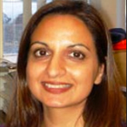

-
Aran Elizabeth Tavakoli
Professional Credentials:
- Master of Science in Nursing (MSN)
- Registered Nurse (RN)
- Advanced Oncology Certified Nurse (AOCN)
Current Positions:
- Clinical Nurse Specialist in Oncology, University of California, San Diego
Past Positions:
- Advanced Practice Nurse for Scripps Memorial Hospital La Jolla, CA
Professional Focus/Area of Expertise:
Safe handling of hazardous drugs.
Curriculum Vitae:
Biography:
Aran is a Clinical Nurse Specialist at UCSD.
A Synopsis of Aran's Message(s):
Aran defines hazardous drugs and negative health effects, identifies work practice that present a risk, outline workplace strategies and describes technology advances that include CSTD.
A Copy of Aran's Past Presentation(s):

-
Firouzan "Fred" Massoomi
Professional Credentials:
- Doctor of Pharmacy (Pharm.D.)
- Fellow of the American Society of Health System Pharmacists (FASHP)
Current Positions:
- Pharmacy Operations Coordinator, Nebraska Methodist Hospital
Past Positions:
- Pharmacy clerk in retail pharmacy
- Research in medicinal chemistry
- Pharmacy resident
- Clinical pharmacists
Professional Focus/Area of Expertise:
Safe handling of hazardous drugs.
Curriculum Vitae:
Biography:
Fred received his doctor of pharmacy degree from the University of Kansas School of Pharmacy, Lawrence, Kansas in 1990. His post-doctoral education included an American College of Clinical Pharmacy (ACCP)-Accredited Fellowship in Infectious Diseases and Phamacokinetics at the University Laval Laboratoire de Pharmcocinetique in Quebec City Quebec Canada in 1991; an ACCP-Accredited Residency in Clinical Pharmacokinetics at Saint Joseph Hospital and Creighton University School of Pharmacy and Allied Health Professionals, Omaha, Nebraska in 1992. He is the Pharmacy Operations Coordinator, Department of Pharmacy at Nebraska Methodist Hospital in Omaha, Nebraska.
Fred has a broad range of practice experiences that was instraumental with decentralization of clinical services, establishing a closed drug formulary, establishing computerized pharmacy clinical programs to support the clinical team, and automated dispensing. Additionally, he has overseen the updating of the pharmacy department to current practice standards as defined by American Society of Health-System Pharmacists, United States Pharmacopeia, and Occupational Safety and Health Administration. Through numerous presentations and publications, Fred has shared his passion for the practice of pharmacy with the goal of promoting the important role that individual pharmacist play in public safety. Fred was honored with the Health-System Pharmacists of the Year award from the Nebraska Pharmacists Association for his work with emergency preparedness for the city of Omaha and State of Nebraska.
A Synopsis of Fred's Message(s):
Fred gives the big picture with safe handling of hazardous drugs including all handling from delivery of the drugs to waste in our environment. Fred is always looking to partner with other clinicians on sharing the message of safe handling and helping with education efforts. Fred is open to providing new evidence and tailoring his presentation on the audience needs.
A Copy of Fred's Past Presentation(s):
 Hazardous Drug Management: Healthcare’s Dirty Little Secret.
Hazardous Drug Management: Healthcare’s Dirty Little Secret. -
Lisa Hodges
Professional Credentials:
- Registered Nurse (RN)
- Bachelor of Science in Nursing (BSN)
- Oncology Certified Nurse (OCN)
Current Positions:
- Director of Nursing Education and Research, Wake Forest University School of Medicine, Winston-Salem, NC
Past Positions:
- 1992-1995: Assistant Nurse Manager, Outpatient Ambulatory Services, Comprehensive Cancer Center of Wake Forest University
Professional Focus/Area of Expertise:
An accomplished oncology nurse, Lisa has presented at several oncology meetings covering everything from treatment options, ONS review course, Patient education to Safe Handling of Cytotoxic Agents. Lisa has conducted surface wipes at Wake Forest showing contamination at the Chairside and how using a CSTD (ChemoClave) has reduced surface exposure.
Curriculum Vitae:
Biography:
N/A
A Synopsis of Lisa's Message(s):
N/A
A Copy of Lisa's Past Presentation(s):
-
Luci Power
Professional Credentials:
- Master of Science (MS)
- Registered Pharmacist (RPh)
Current Positions:
- Independent consultant/lecturer at Power Enterprises
Past Positions:
- Senior Pharmacists
- University of California Medical Center in San Francisco (25 yrs)
Professional Focus/Area of Expertise:
Luci is an expert with recommended guidelines and gives lectures on the handing of hazardous drugs and exposure. Luci has also done consulting work for Intelligent Hospital System with the RIVA robot so has a vast knowledge on automation.
Curriculum Vitae:
Biography:
Luci is an independent lecturer and consultant on pharmacy IV and hazardous drug systems. She was with the department of pharmaceutical services at the University of California Medical Center in San Francisco for over 25 years serving in various capacities, including Senior Pharmacists and Manager of the Parenteral Support Services, and Manager of IV Additive Services where she was responsible for in-patient chemotherapy and other hazardous drug compounding.
Luci is a primary author of both the 1985 and 1990 ASHP Technical Assistance Bulletins on Handling Cytotoxic and Hazardous Drugs; lead author of the 2006 ASHP Guidelines on Handling Hazardous Drugs and first author of the ASHP Safe Handling of Hazardous Drugs Video Training Program. Luci is an original member of the National Institute for Occupational Safety and Health (NIOSH) working group on hazardous drugs and an author of the 2004 NIOSH Alert: Preventing Occupational Exposures to Antineoplastics and Other Hazardous Drugs in Health Care Settings.
A Synopsis of Luci's Message(s):
Luci is very passionate and has been leading the charge on safe handling for over 25 years. Luci was one of the first to blow the whistle on unsafe chemo practices in the early 1980s. Luci continues to advice professional groups about safety practices, and will voice that denial continues to be a huge problem.
A Copy of Luci's Past Presentation(s):
Safe Handling of Hazardous Drugs: Risks and Practical Considerations. -
Marlon Garzo Saria
Professional Credentials:
- Master of Science in Nursing (MSN)
- Registered Nurse (RN)
- (ADCNS)
Current Positions:
- Staff Nurse, Infusion Center, University of California, San Diego
Past Positions:
Professional Focus/Area of Expertise:
Identify work practice that present a risk to exposure, and practical considerations to take into consideration when choosing technology.
Curriculum Vitae:
Biography:
Marlon was born and raised in the Philippines, came to San Diego, California in 1998. He obtained his BSN from the University of the Philippines, MSN from UCLA, and is currently attending the PhD program at UCLA. Marlon is one of the few your professionals in San Diego who is constantly invited to be a member of a work group, task force, executive board in many different organizations including academic, professional, political and community organizations. He has continuously engaged oncology nurses in many community activities and has volunteered countless hours in support of a number of local and national organizations.
Marlon was recently elected into office as Secretary for Oncology Nursing Society (ONS) and is very passionate to travel and educate other ONS members on safe handling of hazardous drugs. Â
A Synopsis of Marlon's Message(s):
Marlon focus is on the most recent guidelines, bills being passed and studies. Marlon was the lead clinician for the Cost Waste study that was presented as a poster and shares this study in his presentation. His presentation covers levels of exposure with exposure map, how to manage exposure and the principle’s of safe handling that include education/training, equipment, regulation and monitoring.
A Copy of Marlon's Past Presentation(s):
Principles for the Safe Handling of Hazardous Drugs: Exposing the Evidence. -
Martha "Marty" Polovich
Professional Credentials:
- Doctor of Nursing (PhD)
- Master of Nursing (MN)
- Registered Nurse (RN)
- Advanced Oncology Certified Nurse (AOCN)
Current Positions:
- Consulting work for CDC, ONS
Past Positions:
- Director, Clinical Practice, Nursing Research and Educator, Duke Oncology Network
Professional Focus/Area of Expertise:
Marty focus is on the safe handling of hazardous drugs related to the guidelines, safe handling standards and evidence.
Curriculum Vitae:
Biography:
Martha (Marty) Polovich recently retired from Duke and is now doing consulting work with CDC (e.g. NIOSH) and ONS. Marty was an oncology nurse since 1980, and Oncology Clinical Nurse Specialists since 1987. She was the Associate Director, Clinical Practice of the Duke Oncology Network in Durham, North Carolina. She received her diploma in nursing from Mount Sinai Hospital School of Nursing (Chicago), and her Bachelor and Masters of Nursing degree from Louisiana State University (New Orleans); and her doctoral in nursing at the Byrdine F. Lewis School of Nursing at Georgia State University (Atlanta).
Ms. Polovich is co-editor of the ONS Chemotherapy and Biotherapy Guidelines and Recommendations for Practice (2001, 2995 and 2009 editions) and editor of Safe Handling of Hazardous Drugs (ONS 2003). Additionally, she is a ONS Liaison to the National Institute for Occupational Safety and Health (NIOSH) Hazardous Drug Safe Handling Working Group since 2000 and the ONS representative to the ASCO/ONS Chemotherapy Safety Standards steering committee since 2008.
A Synopsis of Marty's Message(s):
Marty’s presentation focuses on the guidelines with a update on any recent evidence on the exposure to hazardous drugs. Marty has a good understanding of all CSTD on the market and their benefit to reducing exposure.
A Copy of Marty's Past Presentation(s):
-
Scott Soefje
Professional Credentials:
- Doctor of Pharmacy (Pharm.D.)
- Board Certified Oncology Pharmacist (BCOP)
Current Positions:
- Associate Director, Oncology Pharmacy Services, Smilow Cancer Hospital at Yale-New Haven
Past Positions:
- Director of Pharmacy at Cancer Therapy & Research Center at University of Texas Health Science Center in San Antonio, TX
Professional Focus/Area of Expertise:
Safe handling of hazardous drugs.
Curriculum Vitae:
Biography:
Scott currently serves as the Associate Director of Oncology Pharmacy Services and the PGY2 Oncology Residency Director at the Smillow Cancer Hospital at Yale New Haven. He earned is Bachelors Degree in Pharmacy from UT Austin, a PharmD from the combined program at UT Health Science Center San Antonio and UT Austin, and an MBA from George Washington University. His oncology pharmacy resident was at the Audie L.Murphy Veterans Hospital in San Antonio and clinical pharmacology fellowship at M.D. Anderson Cancer Center. He has been board certified since 2000.
Scott's interest in oncology arose early in his career. His first pharmacist job was as an oncology pharmacist and during PharmD training, Jim Koelier and John Kuhn had a tremendous influence on his career choice. His interest in oncology was driven by the pharmacology and the impact that pharmacy can have on cancer patients. His current interest is in outcomes, optimizing therapy, and the economics of health care.
A Synopsis of Scott's Message(s):
Scott gives the message adopting the right system (CSTD) with a review that includes nursing. Using the system once implemented - the ChemoClave Spiros forces compliance where it can be bonded on administration sets or with Spinning version locked onto syringe and end of primary tubing. Scott reminds clinicians that the device is only as effective as the operator's technique.
A Copy of Scott's Past Presentation(s):
-
Seth Eisenberg
Professional Credentials:
- Registered Nurse (RN)
- Oncology Certified Nurse (OCN)
Current Positions:
- Professional Practice Coordinator, Infusion Services, Seattle Cancer Care Alliance
Past Positions:
- 1986 - 2000 Staff and Bone Marrow Transplant specialist at University of Washington Medical Center and Fred Hutchinson Cancer Research Center
Professional Focus/Area of Expertise:
An accomplished oncology nurse, Seth has presented at national and international oncology conferences, editor of ONS Chemo SIG as a resource to oncology nurses, selected as member with LNI for WA. new law on Hazardous Drug handling/educating, and has published in oncology and infection control journals.
Curriculum Vitae:
Biography:
Seth Eisenberg, RN, OCN is the professional Practice Coordinator for Infusion Services at the Seattle Cancer Care Alliance. He studied at California State University Northridge and received his nursing degree from the University of Nevada, Las Vegas. He has been practicing in the field of oncology since 1983. His involvement with the Oncology Nursing Society includes serving as Chemotherapy SIG Coordinator, SIG Council Chairperson, and is currently Contributing Editor for ONS Connect in addition to being a member of the ONCC Test Development Committee.
He has published articles in "Nursing Clinics of North America," the "Oncology Nursing Forum," and the "Journal of Infusion Nursing" to name a few. Seth was one of the editors for the NCI Chemotherapy and You booklet, and edited a chapter in the 2009 ONS Chemotherapy and Biotherapy Guidelines and Recommendations for Practice. He has presented on a variety of topics at national conferences including toxicities of high does chemotherapy, safe handling of chemotherapy, and vesicant extravasation.
A Synopsis of Seth's Message(s):
Seth gives the historical perspective of hazardous drugs, provides a overview of the routes of exposure, a review of guidelines including WA state new law, engineering controls such as CSTD and what to look for in the design of devices (e.g. passive design, easy to use, compliance with nursing).
Seth is very open to providing new evidence and tailoring his presentation depending on the audience (pharmacy, nurses, pediatric).
A Copy of Seth's Past Presentation(s):
-

Shilla Patel
Professional Credentials:
- Doctorate of Optometry (OD)
- Board Certification in Infection Control (CIC)
Current Positions:
- Infection Preventionist, UC San Diego Health System
Past Positions:
- Interim Manager, Clinical Epidemiology, Scripps Mercy Hospital
- Clinical Epidemiologist, Scripps Mercy Hospital
- Infection Control Consultant, Vibra Healthcare
- Optometrist, Southern California Kaiser Permanente Medical Group
- Resident in Primary Eyecare and Geriatric Optometry, West Los Angeles VA Medical Center
Professional Focus/Area of Expertise:
Epidemiology and infection prevention.
Curriculum Vitae:
Biography:
Shilla Patel graduated from UCLA with a Bachelors of Science in Microbiology and Molecular Genetics and went on to receive a Doctorate of Optometry from the University of California, Berkeley. After working in patient care for a number of years, she transitioned into the field of Epidemiology where she has been working for the past 6 years.
She is the Infection Preventionist/Clinical Epidemiologist at UC San Diego Health Systems. She is also the President Elect for the APIC San Diego chapter and on the California Hospital Association HAI workgroup committee. She has a passion for keeping patients safe by preventing HAI infections and enjoys empowering healthcare workers by giving educational presentations to her colleagues and local Nursing societies.
A Synopsis of Shilla's Message(s):
Shilla Patel’s past ICU Medical-sponsored presentations have focused on interpreting current guidelines related to infection prevention strategies for vascular access. Highlighted are the CDC recommendations regarding the use of positive displacement devices.
A Copy of Shilla's Past Presentation(s):
-
Steve D'Amato
Professional Credentials:
- Registered Pharmacist (R.Ph.)
- Board Certified Oncology Pharmacist (BCOP)
Current Positions:
- Director of Pharmacy, Maine Center for Cancer Medicine
Past Positions:
- 1983 - 2001: Clinical Oncology Pharmacists, MCCM
Professional Focus/Area of Expertise:
Steve has lectured on safe handling of hazardous drugs, medication errors and extensively on pain management. Is a member of several oncology associations (e.g. HOPA, ASHP, ACCP) and has clinical knowledge in hospital and private practice settings.
Curriculum Vitae:
Biography:
Steven D’Amato is Director of Pharmacy Services at the Maine Center for Cancer Medicine and Blood Disorders in Scarborough, Maine. He is on the faculty of the University of Vermont College of Medicine. Mr. D’Amato is a member of ASCO, ACCC, HOPA, ASHP and ACCP. He earned his BSP at Massachusetts College of Pharmacy in Boston, Mass. and did a clinical rotation in oncology at the University of Washington. D’Amato is a member of the Maine Medical Center Institutional Review Board and the Northern New England Oncology Society. He has had experience in clinical oncology for more than 20 years in both the hospital and private practice settings.
D’Amato has extensive knowledge in electronic health record implementation and co-ordinates treatment regimens and research protocols for four practice sites. He has lectured extensively in the areas of pan and symptom management in oncology.
A Synopsis of Steve's Message(s):
Steve D’Amato gives the historical perspective of hazardous drugs, overview of the current CSTD available on market and gives a good overview of the reality of what is happening at facilities related to compliance, guidelines and use of products and focuses on that education remains the cornerstone for providing a safe environment.
A Copy of Steve's Past Presentation(s):
Handling Hazardous Chemotherapeutic Agents: Effective Strategies for Risk Containment